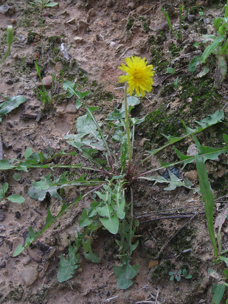
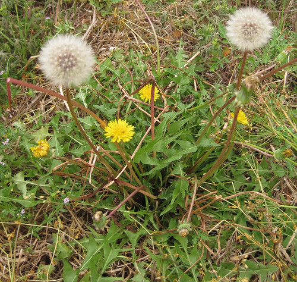

Dandelion
Scientific name: Taraxacum officinale
Abundance: common
What: leaves, flowers, roots
How: young leaves in salad or boiled; flowers are used in wine; roots are roasted to make a coffee substitute or boiled for twenty-thirty minutes before eating
Where: yards, sunny
When: spring, early summer
Nutritional Value: Vitamins A, B, thiamine, riboflavin, minerals, and protein
Medicinal Summary:
Flower - wound healer (
salve,
infused oil)
Root/Leaves - diuretic; antibacterial; laxative; sedative; appetite stimulant (
poultice,
tisane,
tincture)
Single dandelion plant.
Dandelions are very persistent!
Cluster of dandelion plants, flowers, and seed-heads.
Dandelions are one of the superfoods of foraging due to their high amounts of vitamins, minerals, and protein as well as the multitude of ways to use them. However, these nutrients come at a cost, mainly the strong bitter flavor of this plant.
This bitterness can be tamed via several different methods. The easiest is just to boil the leaves in several changes of water to extract the bitter compounds. This will remove a small amount of the nutrients and the resultant leaves are not very visually appealing.
If you have access to milder greens with which to make a salad then "dilute" a small amount of shredded dandelion leaves with a much large amount of mild greens. 1 part dandelion + 9 parts mild greens is a good ratio.
Wilting the dandelion greens with hot bacon grease is perhaps the most flavorful method. The hot grease both destroys some of the bitter compounds as well as coats and "desensitizes" your tongue to the bitterness. This is my favorite treatment. Note that olive oil will also work though not quite as well.
Overwhelming the bitterness with (sour) vinegar and or salty (soy sauce) flavors also works. A strong vinegar/oil salad dressing with the dandelion greens works very well.
The yellow flowers can be used to make wine, tea, or dress up a salad. Remove the extremely bitter, green bracts from the base of the flower though.
To make dandelion coffee you first need to collect a large bowl of dandelion roots. Scrub them to remove dirt, then roast them in an oven at 400 degrees F until they turn brown. The dark brown the darker the resultant coffee. Grind the browned roots in a coffee grinder and then you can use the results as you would regular coffee grounds. While this tastes just like normal coffee it does not contain any caffeine.